Expert Réseaux & Sécurité
Développeur Full-Stack
Passionné de cybersécurité
Restez en sécurité contre le cyber
Diaby Aboubacar Sidik
Jeune IT polyvalent
Créer un avenir numérique sécurisé et centré sur l'utilisateur.
Alliant expertise en réseaux, développement web et passion pour la cybersécurité,
je conçois des solutions innovantes pour protéger les données et optimiser les systèmes.
Rejoignez-moi dans cette aventure technologique !
